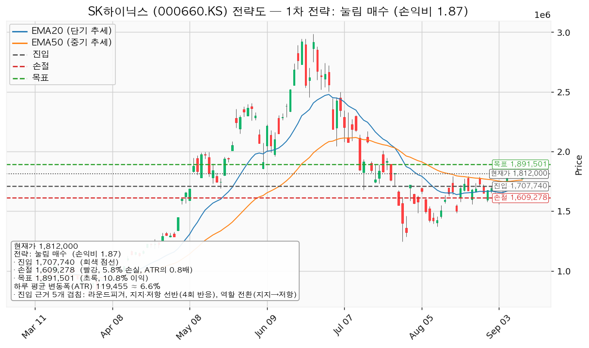
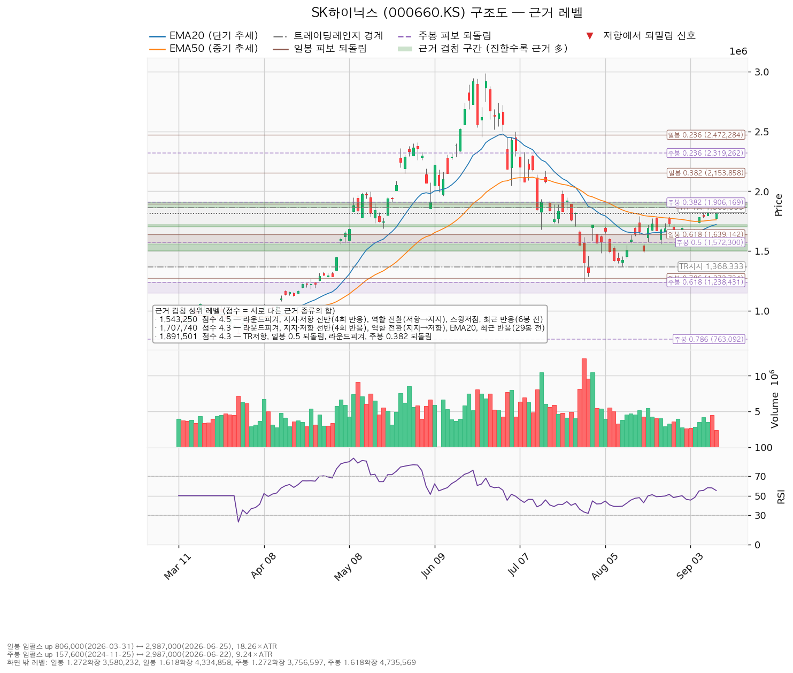
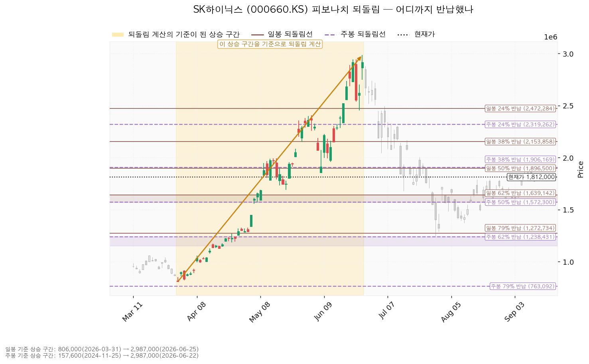
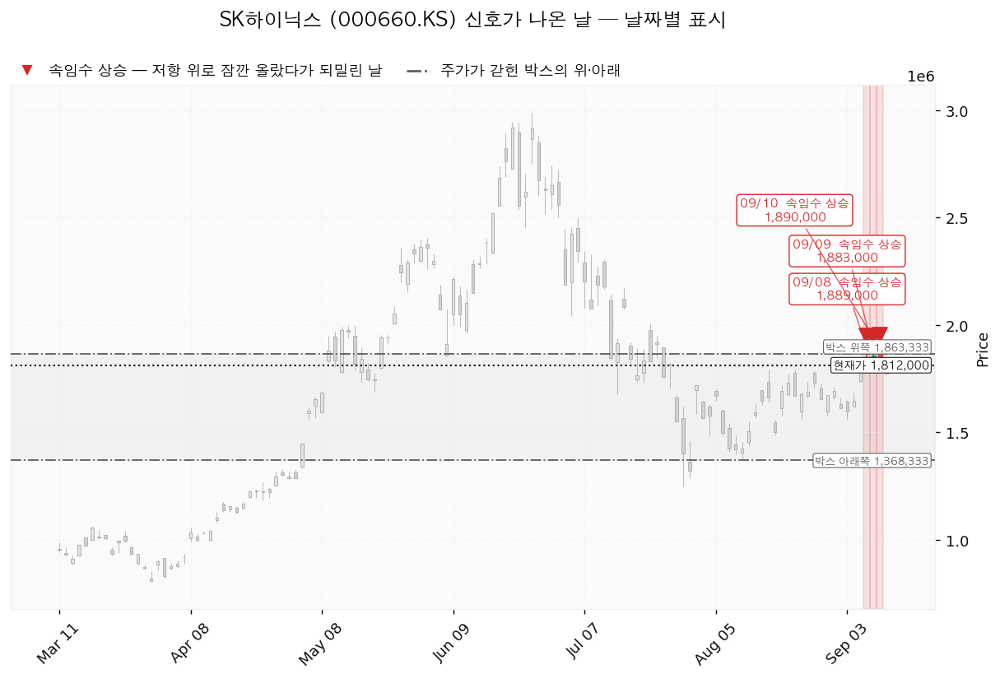

SK하이닉스(000660.KS)는 D램·HBM·낸드 등 메모리 반도체를 설계·생산하는 한국 기업이며, 실적이 메모리 가격 사이클에 크게 연동됩니다.
| 구분 | 가격 | 판정 방식 | 현재가 대비 | 상태 |
|---|---|---|---|---|
| 회복선 | 1,543,250원 | 일봉 종가로 회복한 뒤 되돌림에서 지지되는지 | -14.83% (2.25 ATR) | 회복 완료 |
| 집행 손절 | 1,609,278원 | 도달 시 즉시 청산 — 진입한 경우에만 유효하며, 미진입 상태에서는 아무 의미가 없습니다 | -11.19% (1.70 ATR) | 미진입 |
| 관망 종료 기준 | 1,639,142원 | 일봉 종가가 아래로 마감 / 또는 2026-10-27 실적 | -9.54% (1.45 ATR) | 유지 중 |
| 확인선 | 1,707,740원 | 일봉 종가 돌파 후 되돌림에서 지지 확인 | -5.75% (0.87 ATR) | 돌파 완료 |
| 폐기선(구조) | 1,368,333원 | 이탈 → 3거래일 내 회복 실패 → 반등이 저항으로 확인 | -24.48% (3.71 ATR) | 유지 중 |
① 당시 트리거의 성적표 — 진입 조건은 미충족, 가격은 반대쪽으로 갔습니다. 직전 리포트의 계획은 "1,719,838원까지 눌렸을 때 매수"였습니다. 9월 8일 이후 일봉 최저가는 9월 11일의 1,768,000원으로, 진입가에 닿은 적이 없습니다. 따라서 손절 1,607,105원과 목표 1,891,501원은 판정 대상이 아니었고, 장부에도 이 종목의 체결 기록은 없습니다(보유 수량 0주).
대신 위쪽에서 두 가지가 있었습니다.
| 직전 리포트가 건 가격 | 이후 실제 | 판정 |
|---|---|---|
| 회복선 1,817,200원 (종가 상회) | 9월 9일 종가 1,856,000원, 9월 10일 종가 1,853,000원으로 위에서 마감 → 9월 11일 종가 1,812,000원으로 다시 아래 | 충족 후 반납 — 3단계 기준으로는 1단계 관찰 |
| 확인선 1,863,333원 (종가 돌파) | 9월 9일 고가 1,883,000원, 9월 10일 고가 1,890,000원으로 장중에만 위 | 미충족 — 종가 돌파 없음 |
매일 도는 보유종목 훑기는 회복선 상회를 "매수 진입"으로 읽지만, 직전 리포트는 회복선을 진입가로 쓰지 않는다고 명시했습니다. 두 가지가 어긋나 있었고, 실제 매수는 없었으므로 계획과 집행이 벌어진 사례는 아닙니다. 이번 등록에서는 이미 지나온 회복선·확인선을 매수 신호로 걸지 않고, 되돌림 진입가와 박스 상단 돌파만 감시 대상으로 둡니다.
② 좌표의 이동 — 이동평균이 올라오면서 겹침 구간이 통째로 내려왔습니다.
| 항목 | 2026-09-08 | 2026-09-11 | 왜 움직였나 |
|---|---|---|---|
| 현재가 | 1,793,000원 | 1,812,000원 (+1.06%) | 박스 상단을 3거래일 두드린 뒤 되밀림 |
| 하루 평균 변동폭(ATR) | 128,147원 | 119,455원 (-6.78%) | 변동성 추가 축소 — 주가의 6.59% |
| 회복선 | 1,817,200원 | 1,543,250원 | 가격이 위로 지나가면서, 아래쪽에서 가장 두꺼운 겹침(4.5점) 자리로 교체 |
| 확인선 | 1,863,333원 | 1,707,740원 | 같은 이유. 박스 상단은 확인선에서 빠지고 맥락으로 이동 |
| 대표 셋업 | 돌파 매수(손익비 0.94) | 되돌림 매수(손익비 1.87) | 되돌림 진입 근거가 3.7점 → 4.3점으로 두꺼워짐 |
| 되돌림 진입 | 1,719,838원 | 1,707,740원 | 겹침 구간에서 EMA50이 빠지고 EMA20(1,720,960원)과 라운드피겨 1,700,000원이 들어옴 |
| 되돌림 손절 | 1,607,105원 | 1,609,278원 | 손절을 밀어내는 기준 구간이 1,639,142~1,700,000원에서 1,639,142~1,678,000원으로 좁아짐 |
| 되돌림 목표 | 1,891,501원 | 1,891,501원 | 같습니다 |
| 국면 후보 | 매집 | 미확정 | 아래쪽 속임수 하락이 이번 산출의 신호 목록에서 빠지고, 위쪽 속임수 상승만 3건 남음 |
③ 판단이 바뀌었는지 — 결론은 관망으로 같고, 대표 셋업이 바뀌었습니다. 직전에는 손익비 0.94짜리 돌파 매수가 대표였고 그것을 패스한 뒤 되돌림 매수를 계획으로 냈습니다. 이번에는 되돌림 매수 자체가 대표 셋업이며 손익비도 1.52 → 1.87로 올라왔습니다. 진입가가 현재가보다 5.75% 아래라 지금 사는 자리가 아니라는 점은 직전과 같습니다. 직전 리포트에서 정정할 오류는 없습니다.
| 항목 | 값 |
|---|---|
| 현재가 | 1,812,000원 (전일 대비 -2.21%) |
| EMA20 (최근 20일 평균 흐름) | 1,720,960원 |
| EMA50 (최근 50일 평균 흐름) | 1,760,432원 |
| RSI(14) (0~100, 최근 상승·하락 강도) | 55.33 |
| ATR (하루 평균 변동폭) | 119,455원 = 주가의 6.59% |
| 국면 | 횡보 레인지(구조 유지 — 하단 사수 조건부) |
| 6월 고점 2,987,000원 대비 | -39.34% |
현재가는 EMA20·EMA50을 모두 위로 올라선 상태이며, 박스 상단 1,863,333원 바로 아래에 있습니다.
어느 구간을 보고 박스로 판정했는가. 조회된 일봉은 729개이며, 40·90·180봉 세 창을 모두 시험해 최근 40봉(약 두 달) 을 골랐습니다. 이 창에서 종가가 박스 안에 머문 비율은 95%, 박스 폭은 하루 평균 변동폭의 4.14배입니다. 90봉 창도 유효했지만(체류 86.7%) 박스 폭이 9.19배로 넓어 실행 기준으로 쓰기 어렵고, 180봉 창은 가격이 한 방향으로 흘러간 정도(0.629)가 커서 박스로 인정되지 않았습니다.
박스 안쪽에서 무슨 일이 있었나. 가격은 직전 2,117,667~2,697,000원 구간에서 아래로 이탈해 지금 박스로 내려왔습니다. 위에서 내려온 박스는 매집과 재분산이 같은 모양을 그리므로, 안쪽에서 일어난 일로 갈라야 합니다.
셋업은 두 개 산출되었습니다.
| 셋업 | 진입 | 손절 | 목표 | 손익비 (손절 폭) | 구조 증명도 | 엣지의 종류 | 판정 |
|---|---|---|---|---|---|---|---|
| pullback_long (되돌림 매수) | 1,707,740원 | 1,609,278원 | 1,891,501원 | 1:1.87 (0.82 ATR) | 선취형(구조 미확인, 0.7) | 평균회귀 — "지지로 눌릴 때 산다" | 이번 계획 |
| breakout_long (돌파 매수) | 1,891,501원 | 1,730,569원 | 2,015,000원 | 1:0.77 (1.35 ATR) | 돌파 확인형(1.0, 최고 등급) | 모멘텀 — "저항을 넘기면 이어진다" | 패스 |
대표 셋업 선정 사유는 *"손익비 1.87 × 구조 증명도(선취형) × 근거 겹침 4.3점으로 선정. 구조가 증명되기 전에 되돌림에서 먼저 잡는다 — 진입가는 유리하나 실패 확률이 높다"* 입니다. 손익비 1등이 그대로 대표가 된 경우이며, 그 대가는 구조 증명도 0.7로 가장 낮은 등급이라는 점입니다. 되돌림 매수는 아직 지지로 증명되지 않은 가격대를 미리 사는 방식이고, 진입 근거가 되는 반복 반응 구간은 지금 '지지→저항'으로 역할이 바뀐 자리입니다. 이 매수는 그 자리가 다시 지지로 돌아선다는 데 거는 것이며, 전환이 실패하면 손절입니다.
돌파 매수의 진입 근거 겹침은 4.3점 / 1,863,333~1,906,169원 으로 이번 산출에서 가장 두꺼운 자리 중 하나입니다 — 박스 상단, 일봉 0.5 되돌림, 라운드피겨, 주봉 0.382 되돌림 네 종류가 한자리에 모여 있습니다. 청산은 목표 2,015,000원 한 곳에서 100% 전량이라 분할 없이 단일 목표이며, 전 구간 손익비도 1:0.77 그대로입니다. 구조 증명도가 최고 등급이지만 손익비가 1에 못 미치므로 잃을 폭이 얻을 폭보다 크고, 이 셋업은 패스입니다. 직전 산출(0.94)보다 더 낮아진 이유는 손절이 1,759,963원에서 1,730,569원으로 내려가 손절 폭이 1.03 ATR에서 1.35 ATR로 벌어졌기 때문입니다.
| 되돌림 매수 상세 | 값 |
|---|---|
| 진입 근거 겹침 | 4.3점 / 1,700,000~1,720,960원 — 라운드피겨, 반복 반응 구간(4회 반응), 역할 전환(지지→저항), EMA20. 29거래일 전 실제 반응이 나온 자리라는 가산이 붙습니다 |
| 손절 근거 | 근거 겹침 구간(1,639,142~1,678,000원, 2.7점 — 일봉 0.618 되돌림, 스윙저점) 바로 아래. 구간 안쪽이 아니라 그 아래로 밀어낸 값이라 손익비가 그만큼 낮게 잡혀 있습니다 |
| 목표 근거 겹침 | 4.3점 / 1,863,333~1,906,169원 — 박스 상단, 일봉 0.5 되돌림, 라운드피겨, 주봉 0.382 되돌림 |
| 진입 대비 | 목표 +10.76% / 손절 -5.77% |
| 현재가에서 진입까지 | -5.75% (0.87 ATR) |
손익비 1:1.87은 손절을 조여서 만든 숫자가 섞여 있습니다. 손절 폭 0.82 ATR은 하루 평균 변동폭보다 좁습니다. 손절 위치 자체는 겹침 구간 아래로 밀어낸 구조적 자리이고, 이 산출에서는 별도의 구조적 손절 기준 손익비가 따로 계산되지 않았습니다 — 손절이 이미 구조 기준이기 때문입니다. 판단이 맞더라도 하루치 흔들림 한 번에 손절이 체결될 수 있다는 점은 그대로 남습니다. 현재가를 추격하지 말라는 판정은 이번에 나오지 않았습니다. 진입가가 현재가보다 아래에 있어 추격이 될 수 없기 때문입니다.

| 단계 | 조건 | 의미 | 행동 |
|---|---|---|---|
| ① 관찰 | 일봉 종가가 1,707,740원 아래로 마감 | 구조 이탈이 시작된 것이며, 되돌아 올라오면 속임수 하락일 수 있어 아직 무효가 아닙니다 | 신규 진입만 중단. 집행 손절은 그대로 둡니다 |
| ② 경고 | 이탈 후 3거래일 안에 1,707,740원을 종가로 회복하지 못함, 또는 그 전에 일봉 종가가 1,588,285원 아래로 마감(하루 평균 변동폭의 1배만큼 더 밀림) — 둘 중 먼저 오는 쪽 | 되돌림 지지 상실 가능성이 우세해집니다 | 잔여 비중 축소. 반등이 나오면 이 가격에서의 반응을 확인합니다 |
| ③ 무효 | 반등이 1,707,740원에서 막히고 그 아래로 되밀림 (지지가 저항으로 전환) | 셋업 폐기 — 구조 해석이 틀린 것으로 확정 | 포지션 정리 후 새 구조가 만들어질 때까지 관망 |
집행 손절 1,609,278원은 이 3단계 판정과 무관하게 별도로 작동합니다. 장중 일시 이탈은 어느 단계에도 해당하지 않습니다.
① 상승 전환
② 횡보 지속
③ 시나리오 폐기
'근거 겹침'은 서로 다른 종류의 지지·저항 근거가 같은 가격대에 몇 개나 몰려 있는지를 점수로 표시한 것입니다. 같은 종류가 여러 개 붙어도 한 번만 가산되므로, 점수가 높을수록 성격이 다른 근거들이 한 자리에 모여 있다는 뜻입니다.
| 가격대 | 점수 | 근거 | 현재가 대비 |
|---|---|---|---|
| 2,015,000원 (1,995,000~2,045,000) | 3.5 | 스윙고점, 라운드피겨, 반복 반응 구간(6회), 스윙저점, 36거래일 전 반응 | +11.20% — 돌파 매수의 목표(패스) |
| 1,891,501원 (1,863,333~1,906,169) | 4.3 | 박스 상단, 일봉 0.5 되돌림, 라운드피겨, 주봉 0.382 되돌림 | +4.39% — 이번 계획의 목표 |
| 1,784,108원 (1,760,432~1,792,000) | 3.9 | EMA50, 스윙고점 2개, 반복 반응 구간(4회), 14거래일 전 반응 | -1.54% — 분할안의 1차 목표 자리 |
| 1,707,740원 (1,700,000~1,720,960) | 4.3 | 라운드피겨, 반복 반응 구간(4회), 역할 전환(지지→저항), EMA20, 29거래일 전 반응 | -5.75% — 이번 계획의 진입 겸 확인선 |
| 1,658,571원 (1,639,142~1,678,000) | 2.7 | 일봉 0.618 되돌림, 스윙저점, 29거래일 전 반응 | -8.47% — 손절을 이 구간 아래에 둡니다 |
| 1,586,150원 (1,572,300~1,600,000) | 2.6 | 주봉 0.5 되돌림, 라운드피겨, 6거래일 전 반응 | -12.47% |
| 1,543,250원 (1,500,000~1,558,000) | 4.5 | 라운드피겨, 반복 반응 구간(4회), 역할 전환(저항→지지), 스윙저점, 6거래일 전 반응 | -14.83% — 회복선 |
| 1,370,667원 (1,368,333~1,373,000) | 2.9 | 박스 하단, 스윙저점, 22거래일 전 반응 | -24.36% — 폐기선 |
| 1,252,388원 (1,238,431~1,272,734) | 4.2 | 주봉 0.618 되돌림, 스윙저점, 일봉 0.786 되돌림, 31거래일 전 반응 | -30.88% |
아래쪽에서 가장 두꺼운 자리는 1,543,250원(4.5점)이며 저항이 지지로 바뀐 구간입니다. 진입 자리 1,707,740원은 반대로 지지가 저항으로 바뀐 구간이고, 그래서 이 매수가 '선취형'으로 분류됩니다 — 역할이 한 번 더 뒤집혀 지지로 돌아서야 성립합니다.

현재가 1,812,000원은 일봉 50% 반납선(1,896,500원)과 62% 반납선(1,639,142원) 사이에 있습니다. 이번 계획의 목표 1,891,501원이 두 시간대의 반납선(일봉 50%, 주봉 38%)과 박스 상단·라운드피겨가 한꺼번에 모이는 자리라는 점이 이 목표를 고른 이유입니다. 손절을 1,639,142원 아래에 둔 것도 같은 이유입니다 — 일봉 62% 반납선이 거기 있어, 그 아래로 내려가면 되돌림 매수의 전제가 사라집니다.

| 날짜 | 신호 | 가격 | 읽는 법 |
|---|---|---|---|
| 2026-09-08 | 속임수 상승(upthrust) | 1,889,000원 | 박스 위 1,863,333원을 장중에 넘었다가 종가 1,793,000원으로 되밀린 날 |
| 2026-09-09 | 속임수 상승(upthrust) | 1,883,000원 | 같은 시도. 종가는 1,856,000원으로 박스 안 |
| 2026-09-10 | 속임수 상승(upthrust) | 1,890,000원 | 세 번째 시도. 종가 1,853,000원으로 다시 박스 안 |
이번 산출에서 신호로 남은 것은 이 세 건뿐입니다. 직전 리포트에 있던 7월 말의 속임수 하락·약세 급락은 이번 신호 목록에서 빠졌고, 위쪽 되밀림만 3거래일 연속으로 남았습니다. 박스 안쪽 판정이 중립인 채 국면 후보가 미확정으로 내려온 이유가 여기 있습니다. 3거래일 연속 상단에서 되밀렸다는 사실은 지금 추격 매수를 하지 않는 실질적 근거이고, 동시에 되돌림 자리가 만들어질 가능성의 근거이기도 합니다.

(a) 배수 — 후행 배수는 계산되지 않았습니다. 후행 PER과 후행 EPS가 모두 데이터에 없어, 후행 기준으로 비싸다·싸다를 말할 수 없습니다. 이 결측은 추정치로 메우지 않습니다.
| 항목 | 값 |
|---|---|
| 후행 PER / 후행 EPS | 없음(데이터 결측) |
| 선행 PER | 3.84배 (내년 예상 EPS 472,170원 기준) |
| 올해 예상 EPS | 349,387원 — 전년 대비 성장률 +478.72% |
| 내년 예상 EPS | 472,170원 — 올해 대비 +35.14% |
선행 3.84배는 이익이 급증하는 구간에 붙은 낮은 배수입니다. 메모리 사이클의 정점 이익에 낮은 배수가 붙는 것은 흔한 일이므로, 이 숫자 하나만으로 저평가라고 결론 내리지 않습니다.
(b) 목표주가는 분포로 봅니다. 애널리스트 38명, 평균 3,197,604원(+76.47%), 최저 1,535,000원(-15.29%), 최고 5,300,000원(+192.49%). 현재가는 가장 낮은 목표보다 위에 있습니다. 최저와 최고가 3.45배 차이 나는 분포이므로 평균 하나를 근거로 쓰기 어렵습니다.
(c) 하락의 정체 — 배수 수축입니다. 최근 90일 동안 컨센서스 EPS는 올해분 +15.6%, 내년분 +16.1% 상향되었습니다. 같은 기간 가격은 6월 고점 대비 -39.34% 입니다. 추정치가 오르는데 가격이 내렸으므로 이것은 배수 수축이며, 사업이 나빠진 것이 아닙니다.
(d) 현금흐름 — 적자가 아닙니다. 2025-12-31 결산 기준으로 영업현금흐름 +53.4조원, 잉여현금흐름 +24.8조원 으로 둘 다 흑자입니다. 설비투자는 16.7조원 → 28.6조원으로 +71.5% 늘었지만 잉여현금흐름은 흑자를 유지했습니다. 이 규모의 투자 증가가 이익으로 돌아오는지는 확인이 필요하므로 아래 확인 캘린더에 걸어 둡니다.
(e) 상승 여력의 분해 — 대부분이 배수 확장입니다. 현재가는 내년 예상 EPS 기준 3.84배입니다. 평균 목표 3,197,604원은 같은 내년 EPS 기준 6.77배입니다. 컨센서스의 +76.47%는 배수가 3.84배에서 6.77배로 다시 벌어져야 달성되는 숫자이며, 내년 이익 추정치가 지금 수준으로 실현되는 것만으로는 채워지지 않습니다. 올해 EPS 기준으로 보면 현재 5.19배 → 목표 9.15배입니다. 배수 확장은 업황과 투자심리에 달린 것이라 가격 구조로 관리할 수 없습니다.
주도주 여부 — 이번 자료로는 확정하지 않습니다. 9월 10일 미국 세션에서 기술주(XLK)는 -1.41% 로 11개 섹터 중 가장 부진했고, 9월 11일 코스피는 -1.75%, SK하이닉스는 -2.21% 로 지수보다 더 밀렸습니다. 다만 이것은 하루치 등락 스냅숏이지 섹터 상대강도 지표가 아니므로, 주도주 판정은 시황 산출물로 보완해야 합니다. 종목 자체로 보면 9월 3일 종가 1,596,000원에서 +13.53% 오른 뒤 박스 상단에서 3거래일 연속 되밀린 위치에 있습니다.
시계가 다르다는 점을 밝힙니다. 컨센서스는 12개월 시계이고 이 리포트의 셋업은 수 주 시계입니다. 두 결론이 갈려도 모순이 아닙니다 — 컨센서스는 맥락이고, 답은 진입·손절·목표입니다.
| 날짜 | 이벤트 | 그때 볼 것 |
|---|---|---|
| 2026-10-27 | 다음 실적 발표 | ① 내년 EPS 컨센서스 472,170원의 방향이 계속 위인지 ② 영업현금흐름이 직전 결산 53.4조원 수준을 지키는지 ③ 설비투자 28.6조원(+71.5%)이 매출·이익 증가로 이어지는지 |
가격 트리거만으로 이 리포트를 끝내지 않습니다. 위 날짜가 이번 판단을 다시 채점하는 날입니다.
구조상의 폐기선 1,368,333원은 현재가에서 하루 평균 변동폭의 3.71배 아래에 있어 실무상 무효화 기준으로 쓸 수 없습니다. 거기까지 가는 동안 손절과 관망 종료 기준이 모두 지나갑니다. 그래서 가격이 아닌 무효화 조건을 따로 둡니다.
하루 평균 변동폭이 주가의 6.59% 로, 경고 기준인 8%보다 낮습니다. 다만 이번 계획의 손절 폭은 0.82 ATR 로 하루 평균 변동폭보다 좁습니다. 판단이 맞더라도 하루치 흔들림 한 번에 손절이 체결될 수 있다는 뜻이며, 이것이 비중을 계좌의 13%로 제한하는 이유입니다. 손절을 더 넓히는 대안은 내지 않습니다 — 손절은 근거 겹침 구간 바로 아래라는 구조적 자리 하나로 고정합니다.
본 자료는 정보 제공 목적이며 투자 자문이 아닙니다. 최종 투자 판단과 책임은 투자자 본인에게 있습니다.